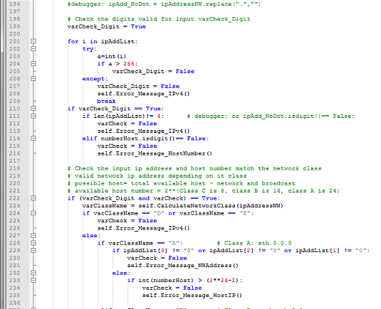

Contact Me
Where to Find Me

Institute of Technology Campus, NSCC
5685 Leeds St, Halifax, NS B3K 2T3

Programming Languages and Software Development
Programming involves analysis, developing understanding, generating algorithms, verification of requirements of algorithms, and implementation of algorithms in a target programming language. Related tasks include testing, debugging, and maintaining the source code, and implementation of the build system.
Sample works include C#, Java, C++, and Python. All the works are to present the technical skills and get understanding about how develop programs
Showcase
C# and .NET Platform
C# is a modern language created by Microsoft as part of its .NET platform of languages.It encompass strong typing, imperative, declarative, functional, generic, object-oriented (class-based), and component-oriented programming disciplines.
. NET Framework is intended to be used by most new applications created for the Windows platform. Microsoft also produces an integrated development environment largely for .NET software called Visual Studio.
Building app
Building Game
Building UWP
C++ and Jave Objective_Oriented_Programming
C++ programming has imperative, object-oriented and generic programming features, while also providing facilities for low-level memory manipulation. C++ is a compiled language, with implementations of it available on many platforms and provided by various organizations
Java is a general-purpose computer programming language that is concurrent, class-based, object-oriented,[14] and specifically designed to have as few implementation dependencies as possible. Java is sn application programming. It is widely used in window, web-based, enterprise and mobile applications. It is platform-independent.
algorithm Implementation Game
Console App
Python
Python is a general-purpose, versatile and popular programming language. Python interpreters are available for many operating systems, allowing Python code to run on a wide variety of systems. This course is a introduction to both fundamental programming concepts and the Python programming language. It's concise and easy to read, and also a good language to have in any programmer's stack as it can be used for everything from web development to software development and scientific applications.

Sample Works for Python
This project is to create a Subnet Calculator using Python program with a graphical user interface.The user will enter two pieces of information: the base network address and the desired number of hosts per subnet. You can assume the network address will be the valid address for a class A, B or C network (e.g. 10.0.0.0) and the desired number of hosts is mathematically possible within that network (e.g. you can't type 257 for a class C network), but the number does not have to match the actual number of possible hosts in the subnet.
UI initial as:

Runnign Result based on user inputs
Sample code for Application
Sample code for UI